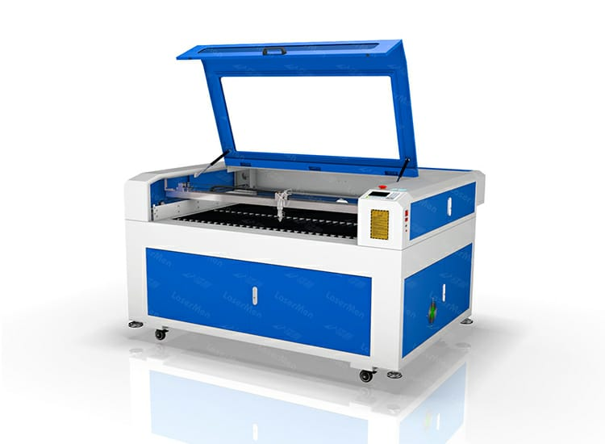

Team Members :
Rakesh Lande
Swayam Dhamode
Parimal Raut
Rohan Khandar
Laser cutting machine :

Overview:
Laser cutting machines are devices that use a high-powered laser beam to cut, engrave, or etch materials such as wood, plastic, metal, glass, and fabric.Operation:
The laser beam is directed by mirrors or lenses onto the material's surface, melting, burning, or vaporizing it to create the desired shape or pattern.Types of Lasers:
Common types of lasers used in laser cutting machines include CO2 lasers (carbon dioxide), fiber lasers, and neodymium (Nd) lasers. Each type has its own characteristics and is suitable for different materials and applications.Materials:
Laser cutting machines can work with a wide range of materials, including acrylic, plywood, MDF, stainless steel, aluminum, leather, and more.Precision and Speed:
Laser cutting offers high precision and speed compared to traditional cutting methods. It can create intricate designs with fine details and sharp edges.Applications:
Laser cutting machines are used in various industries, including manufacturing, signage, jewelry making, automotive, aerospace, and architectural modeling. They are also popular in small businesses, hobbyists, and educational settings.Safety:
Laser cutting involves high-intensity light and heat, so safety precautions are essential. Operators should wear appropriate protective gear, and machines should have safety features like enclosures, interlocks, and exhaust systems to remove fumes and debris.Software:
Laser cutting machines are often controlled by specialized software that allows users to design and program cutting patterns, adjust settings, and optimize efficiency.
Laser CAD :
Laser CAD software is specialized software designed for creating and editing designs for laser cutting and engraving. It allows users to upload 2D drawingsIt is Run On Two Major Factors
1.Power:
Think of power like the strength of the laser beam. More power means the laser can cut through thicker or tougher materials, but too much power can damage delicate materials.2.Speed:
Speed is how fast the laser moves across the material. Faster speeds can cut quickly but might not be as precise, while slower speeds are more accurate but take longer.first object

Export it from Fusion 360 and upload it into laser cad software
After cutting :

Second object

Export it from Fusion 360 and upload it into laser cad software
After cutting :

Laptop stand:

Export it from Fusion 360 and upload it into laser cad software
After cutting :


Rocket:

Export it from Fusion 360 and upload it into laser cad software
After cutting :


"We've fine-tuned our laser cutting process to ensure top-notch results every time."